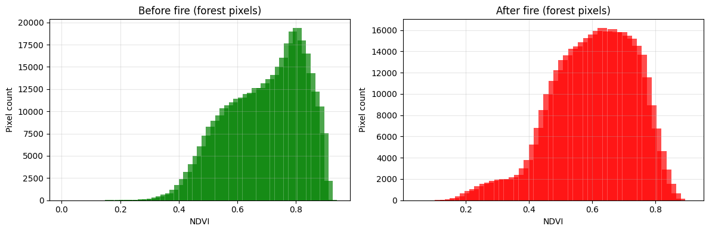
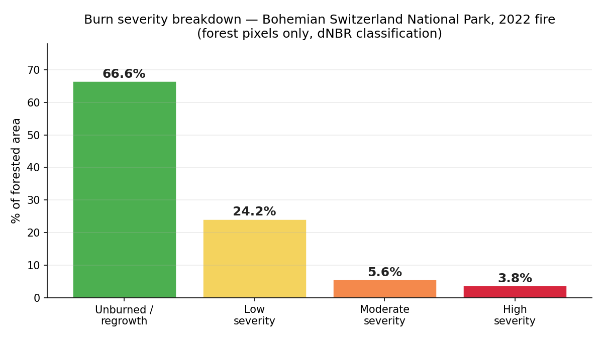
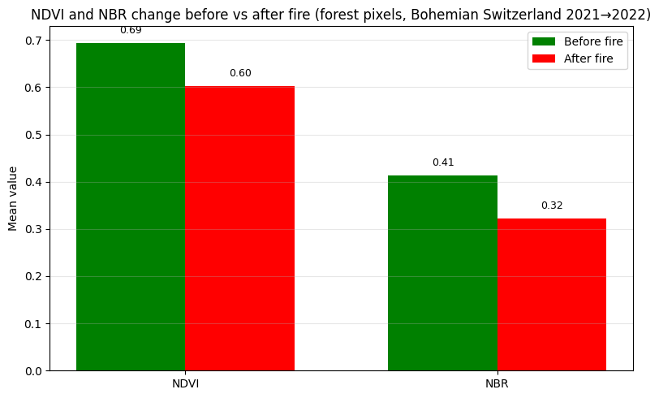

×


Toggle layers to compare pre-fire and post-fire imagery, burn severity (dNBR), severity classes and NDVI change — same map as in the analysis notebook.
In July and August 2022, Bohemian Switzerland National Park (České Švýcarsko) — a protected sandstone landscape on the Czech–German border — experienced the largest forest fire in Czech recorded history, burning for several weeks and requiring an international firefighting response.
This project uses Sentinel-2 satellite imagery and Google Earth Engine to answer a simple question: how severe was the fire, which areas were hit hardest, and what share of the park's forest suffered serious canopy damage?
Of the park's 94.4 km² of forest, roughly a third burned to some degree. Breaking that down by severity:
| Severity class | Area | % of forest |
|---|---|---|
| Unburned / regrowth | 62.9 km² | 66.6% |
| Low severity | 22.9 km² | 24.2% |
| Moderate severity | 5.3 km² | 5.6% |
| High severity | 3.6 km² | 3.8% |

Expressed against everything that burned rather than the whole forest, 27.8% of the burned area was moderate-to-high severity — closely matching independently reported fire-extent figures. The pattern is ecologically typical of large wildfires: a wide low-severity perimeter (likely surface/understory burn, where natural regeneration is realistic) surrounding a smaller, more severely burned core (likely stand-replacing crown fire, requiring active replanting).

Mean NDVI over forest pixels dropped from 0.69 to 0.60, and mean NBR dropped from 0.41 to 0.32 — a proportionally larger decline (~22%), consistent with theory: NBR is more sensitive to post-fire moisture loss and char/ash signatures, while NDVI mainly tracks canopy greenness.
The result was cross-checked two ways: a sanity check re-running the analysis over the whole park (forest mask removed) produced nearly identical class proportions, confirming the land-cover mask wasn't distorting the outcome; and a bookkeeping check confirmed the severity classes summed to within ~0.1% of the independently computed forest area.
94.4 km²
89% of the 106 km² park
27.8%
of the burned forest area
9.4%
of the entire forested park area
66.6%
of forest showed no significant burn signal